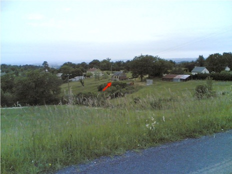
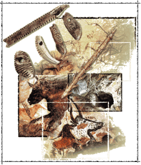
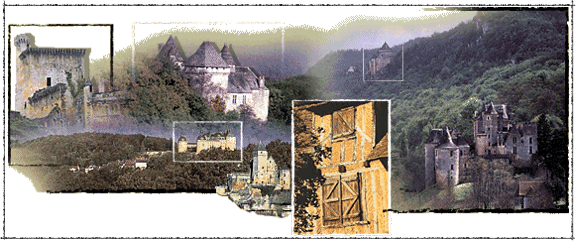
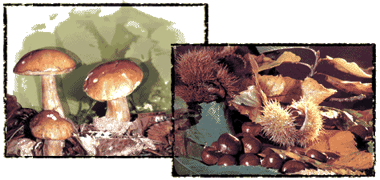
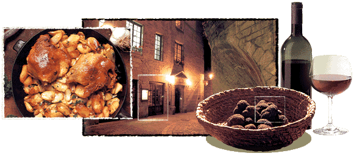
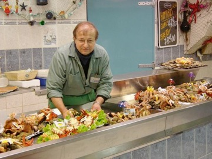

Perso

Bio
I was born in Brive-la-Gaillarde, Corrèze in France. My familly is also native from Corrèze. My father was born in a little house in the prairie where my grand-mother lived until very recently:
However, I spent my youth in another town in the south-ouest of France, Terrasson-Lavilledieu a city in Périgord.

Marcel Familly
My father is Jean-Louis Marcel, he was fishmonger (quite unusual in Périgord isn't it !) and my mother is Bernadette (she is Duchess, heiress of family De Coux one of the most former family of the area :-)). I also have a brother, Matthieu.
Périgord and Dordogneshire
Périgord is a region of France (former province) which now corresponds roughly to the current Dordogne department (administrative division).
Périgord is famous for its rock paintings on cave walls, Roman remains, Romanesque churches, fortified towns (bastides), castles and food (wine, cèpes, truffles, duck and goose, which yield many specialities from foie gras). To know more about Périgord have a look to this guide.
Périgord is also called Dordogneshire as a lot of British expats have settled in this part of France.





I am married to Christine and we have two wonderful children (of course) Léo and Lucie.
